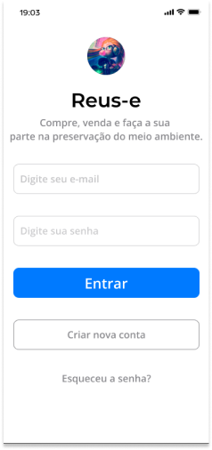
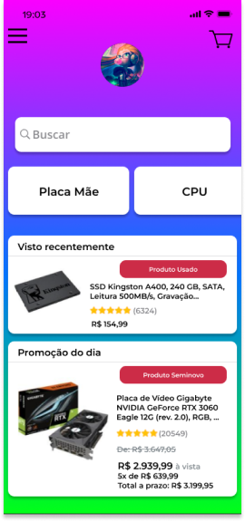

Reus-e, o marketplace voltado para o
comércio de peças de computadores
usadas, seminovas ou, até mesmo,
novas e prontas para uso.
Como grande parte dos produtos encontrados neste
marketplace são usados ou seminovos, você nunca
encontrará propostas confiáveis tão boas quanto as
que encontrará aqui.
Além disto, comprar e vender produtos utilizando o
reus-e significa ajudar o meio ambiente, visto que
relançar produtos usados no mercado reduz o
desperdício.

